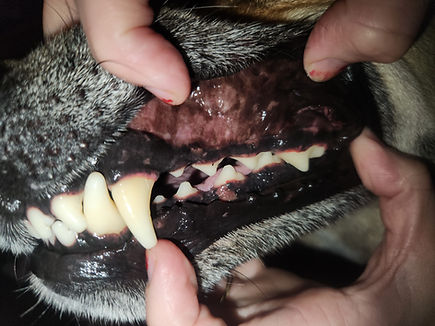
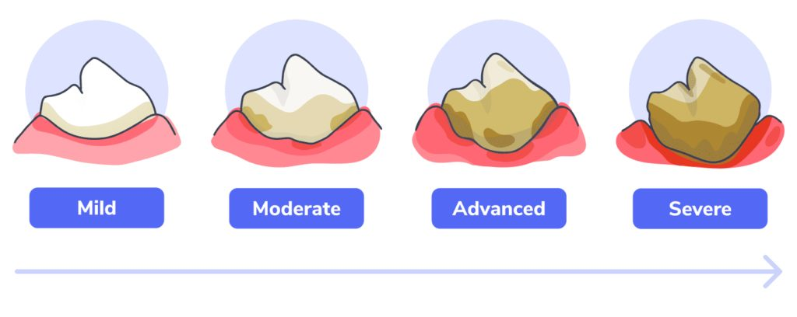
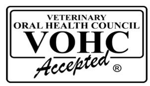

February is Dental Health Month, a perfect time to focus on the wellness of your pet’s teeth and gums. Just like humans, pets need regular dental care to maintain their overall health and longevity. Ignoring dental health can lead to painful infections, tooth loss, and even affect vital organs.

Post Dental Prophylaxis

Stages of Dental Disease
Why Dental Health Matters for Pets
Dental health is often overlooked in pet care, but it plays a crucial role in their overall wellness. Poor oral hygiene can cause plaque buildup, leading to tartar, gum disease, and bad breath. If left untreated, bacteria from dental infections can enter the bloodstream and affect the heart, kidneys, and liver.
Pets with healthy teeth tend to live longer and enjoy a better quality of life. Regular dental care supports their ability to eat comfortably and stay active. For pet owners, understanding the importance of dental health is the first step toward preventing costly veterinary treatments.
Signs Your Pet Needs Dental Care
Pets cannot tell us when they have dental pain, so it’s important to watch for signs that indicate a problem:
Bad breath that does not improve with brushing
Yellow or brown buildup on teeth
Red, swollen, or bleeding gums
Difficulty eating or chewing
Drooling more than usual
Pawing at the mouth or face
If you notice any of these signs, schedule a veterinary dental checkup. Early intervention can prevent serious issues.
Daily Dental Care Tips for Pets
Maintaining your pet’s dental health requires consistent effort. Here are some effective ways to care for your pet’s teeth at home:
Brush their teeth regularly using a pet-safe toothpaste and toothbrush. Start slowly to get your pet comfortable.
Offer dental chews or toys designed to reduce plaque and tartar. These also help keep your pet entertained. Look for the VOHC emblem to know you're buying a trusted & effective product.
Feed a balanced diet that supports dental health. Some pet foods are specially formulated to reduce plaque buildup.
Provide fresh water to help rinse the mouth and keep gums hydrated.
Brushing your pet’s teeth daily is the most effective way to maintain dental wellness. Even a few times a week can make a significant difference.
Choosing the Right Dental Products
Not all dental products are created equal. When selecting toothpaste, chews, or toys, look for those approved by veterinary dental associations. Avoid human toothpaste, which can be toxic to pets.

Some popular options include:
Enzymatic toothpaste that breaks down plaque
Rubber or nylon chew toys that massage gums
Dental treats with ingredients that reduce bacteria
Recommendations can be tailored to your pet’s breed, age, and health status.
Professional Dental Care and Promotional Discounts
Veterinary dental cleanings are essential for deep cleaning below the gumline where brushing cannot reach. We offer a promotional discount during Dental Health Month to encourage pet owners to schedule these cleanings.
Professional cleanings remove tartar, polish teeth, and check for underlying issues. Dental X-rays to assess tooth roots and bone health are also recommended and included for all dentals. Taking advantage of these discounts can save money while ensuring your pet receives thorough care.
Encouraging Dental Wellness in Older Pets
As pets age, their dental needs change. Older pets are more prone to gum disease and tooth loss. Regular dental exams become even more important to maintain their longevity and comfort.
For senior pets:
Increase the frequency of dental checkups
Use softer toothbrushes or finger brushes for sensitive gums
Monitor eating habits closely for signs of discomfort
Maintaining dental wellness in older pets helps prevent pain and supports their overall health.